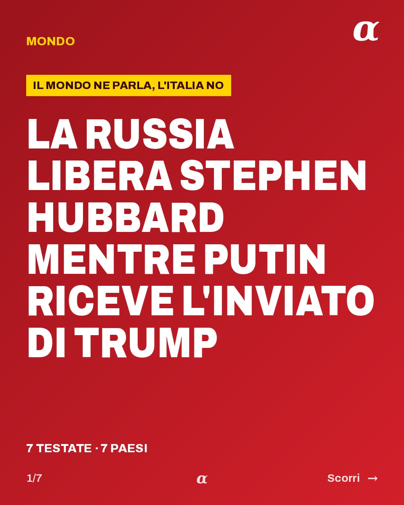
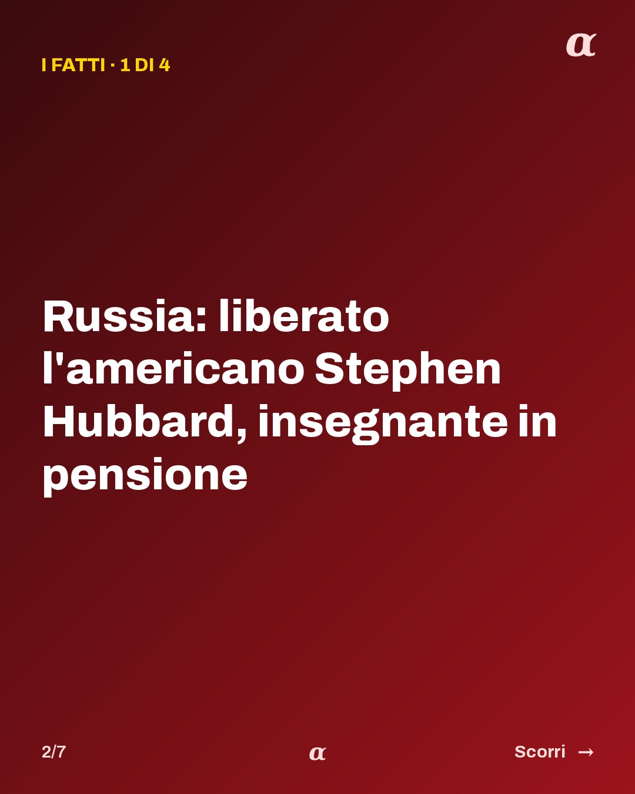
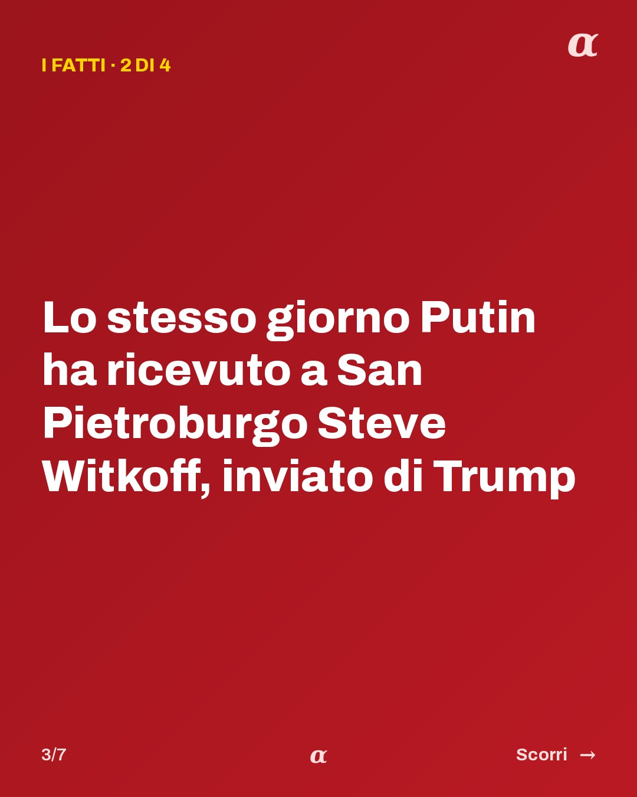
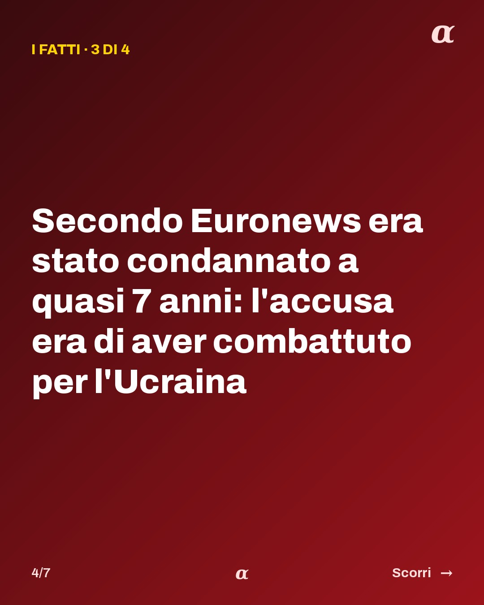
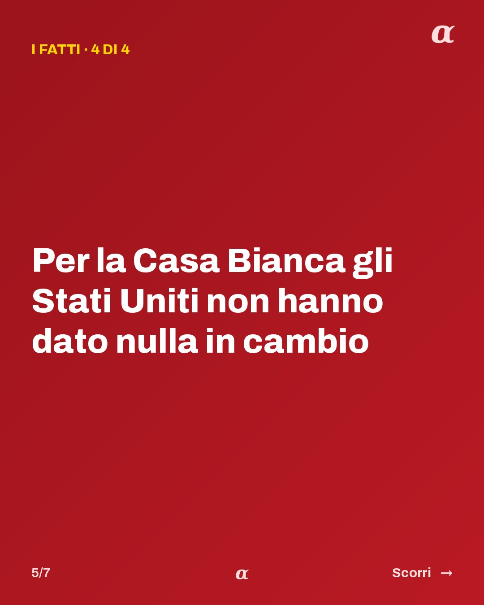
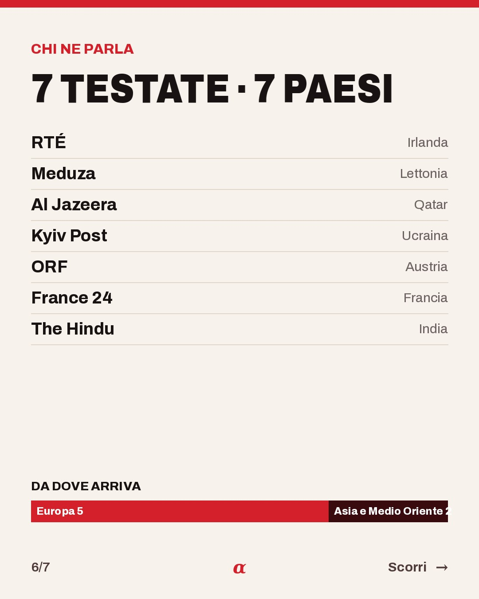
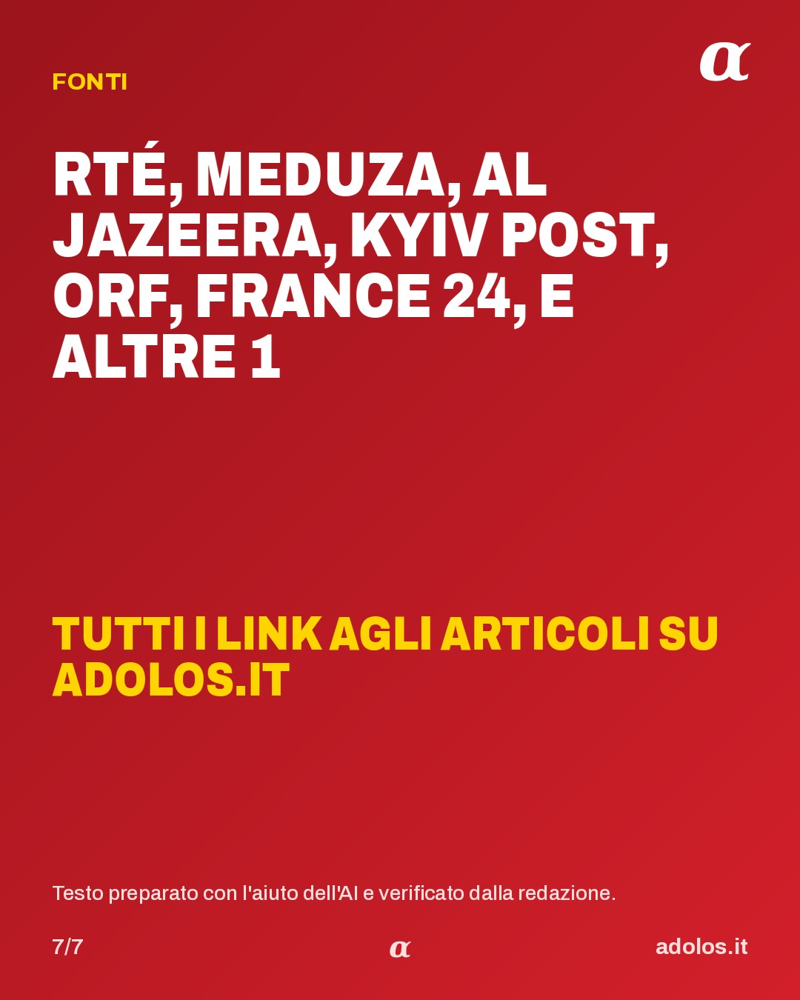

7 slide, formato 1080×1350. Sul telefono: tieni premuto su un'immagine e scegli "Salva".

Scarica slide 1
Scarica slide 2
Scarica slide 3
Scarica slide 4
Scarica slide 5
Scarica slide 6
Scarica slide 7